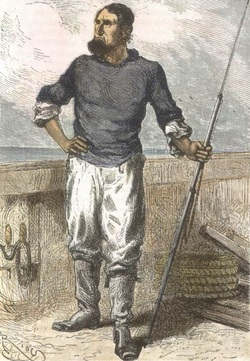

Ned Land is a master harpooner. He was most likely brought in due to Dr. Aronnax's theory that the creature was a great narhwal. The opposite of Dr. Aronnax, Land is the first to follow his gut and takes reality as what he sees to be the truth, instead of believing what others inform him.

struck me with his harpoon?"
I detected a restrained irritation in these words. But to these
recriminations I had a very natural answer to make, and I made it.
"Sir," said I, "no doubt you are ignorant of the discussions which have
taken place concerning you in America and Europe. You do not know that
divers accidents, caused by collisions with your submarine machine,
have excited public feeling in the two continents. I omit the theories
without number by which it was sought to explain that of which you
alone possess the secret. But you must understand that, in pursuing
you over the high seas of the Pacific, the Abraham Lincoln believed
itself to be chasing some powerful sea-monster, of which it was
necessary to rid the ocean at any price."
A half-smile curled the lips of the commander: then, in a calmer tone:
"M. Aronnax," he replied, "dare you affirm that your frigate would not
as soon have pursued and cannonaded a submarine boat as a monster?"
This question embarrassed me, for certainly Captain Farragut might not
have hesitated. He might have thought it his duty to destroy a
contrivance of this kind, as he would a gigantic narwhal.
"You understand then, sir," continued the stranger, "that I have the
right to treat you as enemies?"
You are going to visit the land of marvels.
These words of the commander had a great effect upon me. I cannot deny
it. My weak point was touched; and I forgot, for a moment, that the
contemplation of these sublime subjects was not worth the loss of
liberty. Besides, I trusted to the future to decide this grave
question. So I contented myself with saying:
"By what name ought I to address you?"
"Sir," replied the commander, "I am nothing to you but Captain Nemo;
and you and your companions are nothing to me but the passengers of the
Nautilus."
Captain Nemo called. A steward appeared. The captain gave him his
orders in that strange language which I did not understand. Then,
turning towards the Canadian and Conseil:
"A repast awaits you in your cabin," said he. "Be so good as to follow
this man.
"And now, M. Aronnax, our breakfast is ready. Permit me to lead the
way."
"I am at your service, Captain."